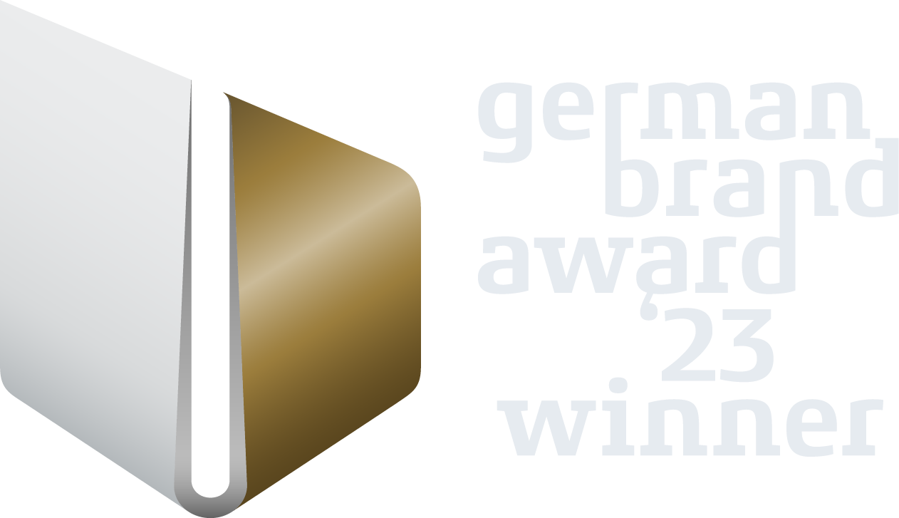
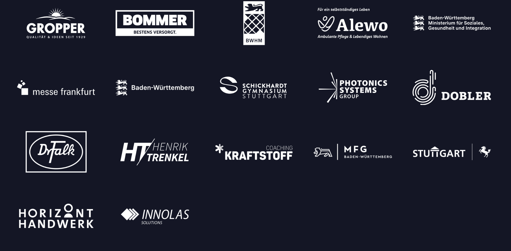
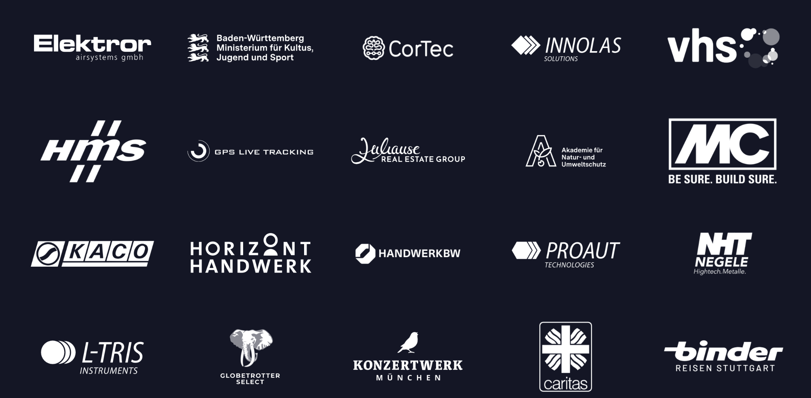
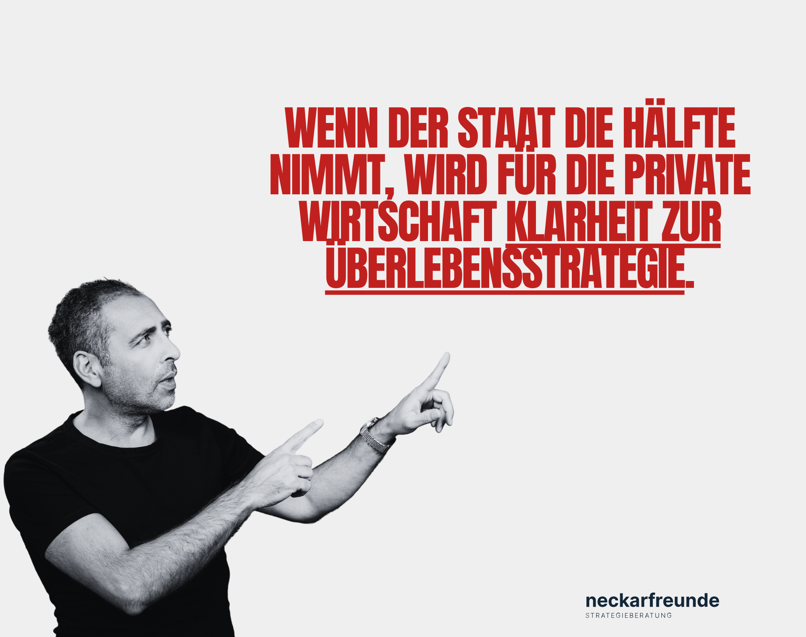
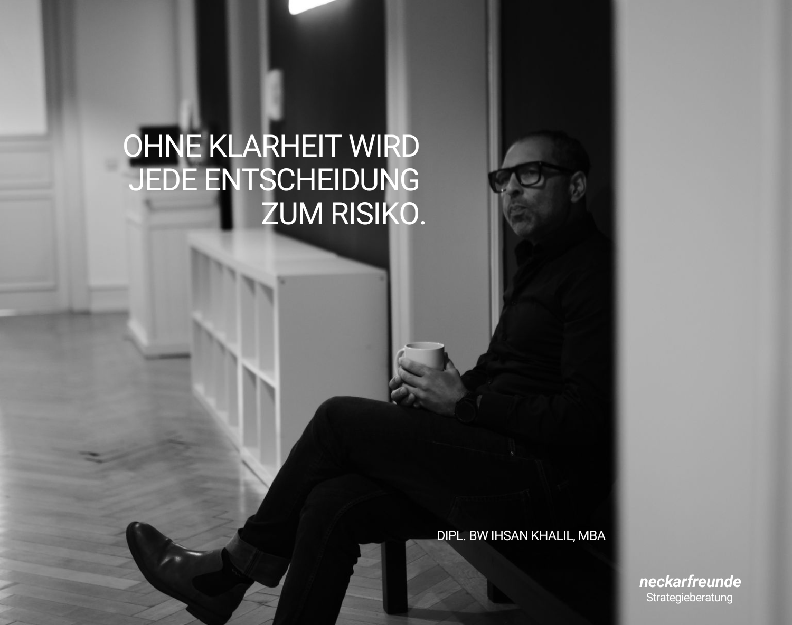
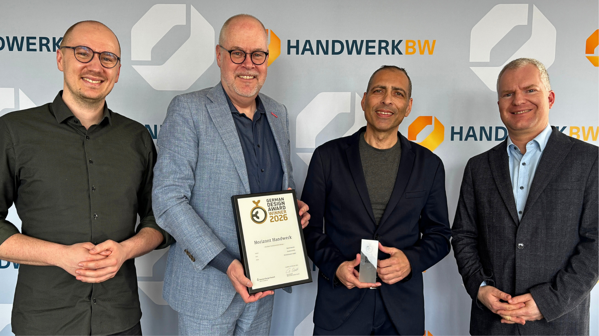

Sprinttag
Wenn ein Thema blockiert und schnell eine klare Diagnose, priorisierte Entscheidungen und ein umsetzbarer Fahrplan gebraucht werden.
Wir gehen dorthin, wo Entscheidungen feststecken, Verantwortung ungeklärt ist oder Umsetzung nicht vorankommt. Wir klären, steuern – und übernehmen auf Zeit Verantwortung, wenn Beratung von außen nicht reicht.
Vom konzentrierten Einstieg bis zur operativen Verantwortung: Wir wählen den Rahmen, der das konkrete Problem löst – nicht den, der den größten Beratungsumfang erzeugt.
Wenn ein Thema blockiert und schnell eine klare Diagnose, priorisierte Entscheidungen und ein umsetzbarer Fahrplan gebraucht werden.
Wenn Markt, Angebot, Positionierung oder Organisation nicht mehr zur nächsten Unternehmensphase passen.
Wenn die Richtung steht, aber wichtige Entscheidungen im Alltag begleitet, geschärft und konsequent nachgehalten werden müssen.
Wenn Erkenntnis allein nicht reicht und für Strategie, Transformation oder Neuausrichtung operative Führungskapazität auf Zeit fehlt.
16 Auszeichnungen aus Strategie, Marke und Kommunikation – darunter German Brand Award, German Design Award und mehrfach der Deutsche Agenturpreis.




„Ihsan spricht eine klare und direkte Sprache, was die Kommunikation stets effizient und zielführend machte. Seine Verbindlichkeit und Beständigkeit waren immer spürbar. Auf Ihsan kann man zählen.“
„Ihsan ist ein Unternehmer mit Herzblut. Er nimmt sich Zeit für persönliche Gespräche, baut eine echte Verbindung auf und gewinnt ein tiefes Verständnis für die Ziele seiner Kunden.“
Das ProvenExpert-Profil bündelt die öffentlich erfassten Bewertungen und macht die Kundenerfahrung nachvollziehbar.
Keine dekorativen Case Studies, sondern konkrete Aufgabenstellungen und Ergebnisse.
Geschäftsmodell, Angebot und Vertrieb neu geordnet. Ergebnis: Dreischichtproduktion, Gastronomiegeschäft um rund ein Drittel und Einzelhandel um 20 Prozent gesteigert.
Aus einer gewachsenen Struktur entstand eine integrierte Unternehmensgruppe mit klarer Marktposition und neuer strategischer Linie.
Langjährige strategische Kommunikationsbegleitung für Handwerk BW – ausgezeichnet mit dem German Design Award 2026.
Ein Auszug aus langjährigen und abgeschlossenen Mandaten.



Warum unternehmerische Klarheit in einem anspruchsvollen Umfeld keine Kür, sondern Voraussetzung ist.
Artikel lesen →
Über Vertrauen, Entscheidungen und die Verantwortung, Orientierung nicht nur zu versprechen.
Artikel lesen →
German Design Award 2026 für Horizont Handwerk – ein gemeinsamer Erfolg aus Strategie, Dialog und konsequenter Umsetzung.
Artikel lesen →Sie schildern vertraulich, woran Ihr Unternehmen festhängt. Wir sagen offen, ob wir helfen können – und welcher Rahmen dafür sinnvoll ist. Kein Pitch. Kein künstlicher Verkaufsdruck.